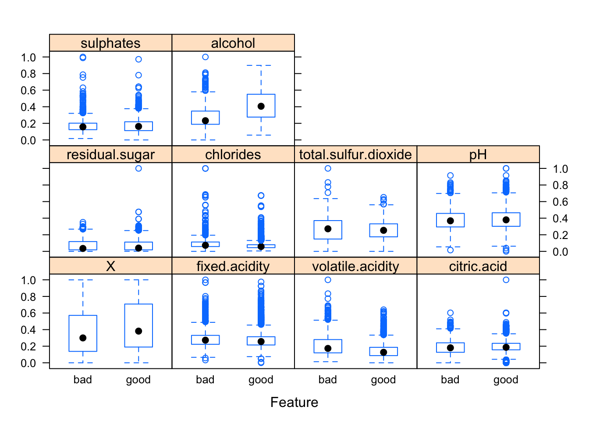
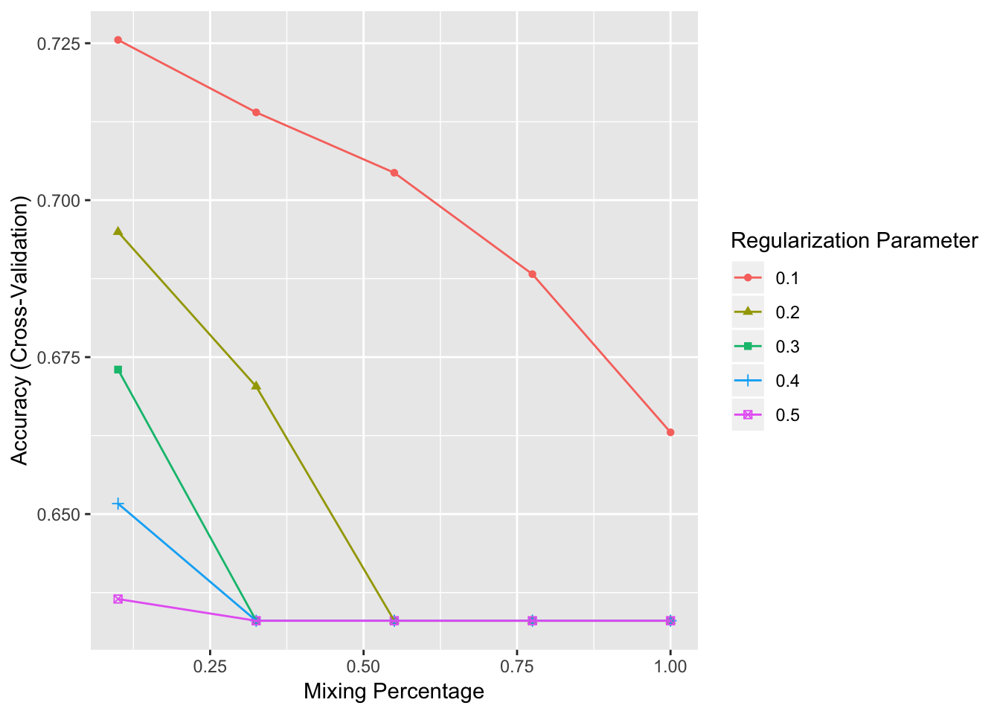

Chapter 2 Regularized Regression
wine <- read.csv("~/Dropbox/M-Team/ML/wine.csv")
str(wine)## 'data.frame': 6497 obs. of 15 variables:
## $ X : int 0 1 2 3 4 5 6 7 8 9 ...
## $ fixed.acidity : num 7.4 7.8 7.8 11.2 7.4 7.4 7.9 7.3 7.8 7.5 ...
## $ volatile.acidity : num 0.7 0.88 0.76 0.28 0.7 0.66 0.6 0.65 0.58 0.5 ...
## $ citric.acid : num 0 0 0.04 0.56 0 0 0.06 0 0.02 0.36 ...
## $ residual.sugar : num 1.9 2.6 2.3 1.9 1.9 1.8 1.6 1.2 2 6.1 ...
## $ chlorides : num 0.076 0.098 0.092 0.075 0.076 0.075 0.069 0.065 0.073 0.071 ...
## $ free.sulfur.dioxide : num 11 25 15 17 11 13 15 15 9 17 ...
## $ total.sulfur.dioxide: num 34 67 54 60 34 40 59 21 18 102 ...
## $ density : num 0.998 0.997 0.997 0.998 0.998 ...
## $ pH : num 3.51 3.2 3.26 3.16 3.51 3.51 3.3 3.39 3.36 3.35 ...
## $ sulphates : num 0.56 0.68 0.65 0.58 0.56 0.56 0.46 0.47 0.57 0.8 ...
## $ alcohol : num 9.4 9.8 9.8 9.8 9.4 9.4 9.4 10 9.5 10.5 ...
## $ quality : Factor w/ 2 levels "bad","good": 1 1 1 2 1 1 1 2 2 1 ...
## $ color : Factor w/ 2 levels "red","white": 1 1 1 1 1 1 1 1 1 1 ...
## $ white : int 0 0 0 0 0 0 0 0 0 0 ...set.seed(1234) # so that the indices will be the same when re-run
# 抽出80%樣本來train, output format is matrix
trainIndices = createDataPartition(wine$quality, p=.8, list=F)
# delete highly correlated free.sulfur and density
wine_train = wine %>%
select(-free.sulfur.dioxide, -density, -color, -white) %>%
dplyr::slice(trainIndices)
wine_test = wine %>%
select(-free.sulfur.dioxide, -density, -color, -white) %>%
dplyr::slice(-trainIndices)check distribution after normalization
wine_trainplot = select(wine_train, -quality) %>%
preProcess(method='range') %>% #標準化處理range => (x-min)/(max-min)
predict(newdata= select(wine_train, -quality)) #利用predict函數顯示出處理好的矩陣
featurePlot(wine_trainplot, wine_train$quality, 'box')
# cross validation 10
cv_opts = trainControl(method='cv', number=10) #定義模型訓練參數，劃分十組交叉驗證（使用repeatedcv可重複劃分）
regreg_opts = expand.grid(.alpha = seq(.1, 1, length = 5),
.lambda = seq(.1, .5, length = 5)) #25種組合(決定lamda重要度？)
results_regreg = train(quality~.,
data=wine_train,
method = "glmnet",
trControl = cv_opts,
preProcess = c("center", "scale"), #指定數據標準化，"center"和"scale"。其中center表示預測變量減去均值
tuneGrid = regreg_opts)
results_regreg #kappa是一統計量指標衡量預測值與實質的差距## glmnet
##
## 5199 samples
## 10 predictor
## 2 classes: 'bad', 'good'
##
## Pre-processing: centered (10), scaled (10)
## Resampling: Cross-Validated (10 fold)
## Summary of sample sizes: 4679, 4680, 4679, 4679, 4679, 4679, ...
## Resampling results across tuning parameters:
##
## alpha lambda Accuracy Kappa
## 0.100 0.1 0.7255274 0.35008588
## 0.100 0.2 0.6949431 0.24105753
## 0.100 0.3 0.6730163 0.15106604
## 0.100 0.4 0.6516660 0.07063484
## 0.100 0.5 0.6364689 0.01492729
## 0.325 0.1 0.7139856 0.31350196
## 0.325 0.2 0.6703273 0.13726298
## 0.325 0.3 0.6330066 0.00000000
## 0.325 0.4 0.6330066 0.00000000
## 0.325 0.5 0.6330066 0.00000000
## 0.550 0.1 0.7043676 0.27703468
## 0.550 0.2 0.6330066 0.00000000
## 0.550 0.3 0.6330066 0.00000000
## 0.550 0.4 0.6330066 0.00000000
## 0.550 0.5 0.6330066 0.00000000
## 0.775 0.1 0.6882142 0.21713151
## 0.775 0.2 0.6330066 0.00000000
## 0.775 0.3 0.6330066 0.00000000
## 0.775 0.4 0.6330066 0.00000000
## 0.775 0.5 0.6330066 0.00000000
## 1.000 0.1 0.6630178 0.11541687
## 1.000 0.2 0.6330066 0.00000000
## 1.000 0.3 0.6330066 0.00000000
## 1.000 0.4 0.6330066 0.00000000
## 1.000 0.5 0.6330066 0.00000000
##
## Accuracy was used to select the optimal model using the largest value.
## The final values used for the model were alpha = 0.1 and lambda = 0.1.ggplot(results_regreg)
- alpha=mixing percentage
- lambda=regularization parameter
preds_regreg = predict(results_regreg, wine_test)
good_observed = wine_test$quality
confusionMatrix(preds_regreg, good_observed, positive='good') ## Confusion Matrix and Statistics
##
## Reference
## Prediction bad good
## bad 197 76
## good 279 746
##
## Accuracy : 0.7265
## 95% CI : (0.7014, 0.7506)
## No Information Rate : 0.6333
## P-Value [Acc > NIR] : 6.665e-13
##
## Kappa : 0.3531
## Mcnemar's Test P-Value : < 2.2e-16
##
## Sensitivity : 0.9075
## Specificity : 0.4139
## Pos Pred Value : 0.7278
## Neg Pred Value : 0.7216
## Prevalence : 0.6333
## Detection Rate : 0.5747
## Detection Prevalence : 0.7897
## Balanced Accuracy : 0.6607
##
## 'Positive' Class : good
## The lower bound (and p-value) suggests we are statistically predicting better than the No Information Rate (i.e., just guessing the more prevalent ‘Bad’ category) -> 猜好的比猜壞的還強
confusionMatrix(preds_regreg, good_observed, positive='good', mode='prec_recall')## Confusion Matrix and Statistics
##
## Reference
## Prediction bad good
## bad 197 76
## good 279 746
##
## Accuracy : 0.7265
## 95% CI : (0.7014, 0.7506)
## No Information Rate : 0.6333
## P-Value [Acc > NIR] : 6.665e-13
##
## Kappa : 0.3531
## Mcnemar's Test P-Value : < 2.2e-16
##
## Precision : 0.7278
## Recall : 0.9075
## F1 : 0.8078
## Prevalence : 0.6333
## Detection Rate : 0.5747
## Detection Prevalence : 0.7897
## Balanced Accuracy : 0.6607
##
## 'Positive' Class : good
##